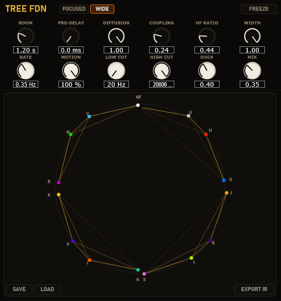
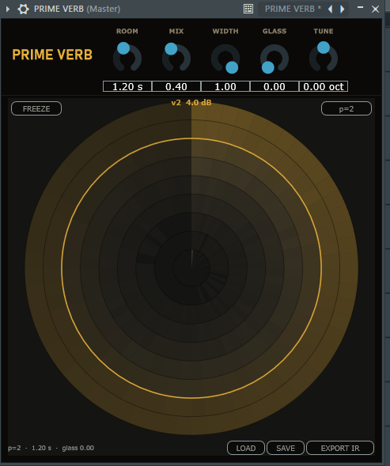
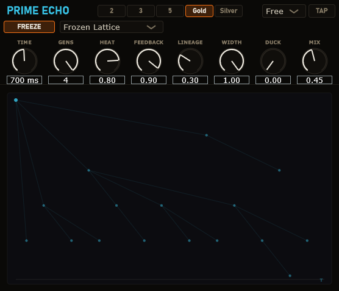
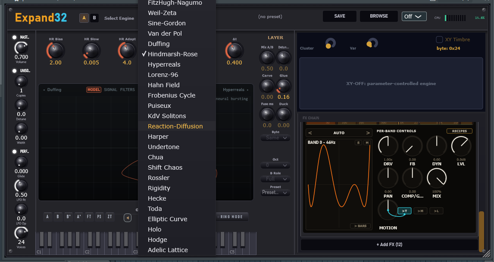

Most synthesizers give you one method — wavetables, FM, granular — and a thousand presets. Expand32 gives you seventy methods: each engine is a different mathematical construction turned into a sound generator, from vibrating strings on exotic geometries to chaotic attractors, Galois fields and quantum wave packets.
They all speak one language — a timbre navigator of clusters and variants you can sweep live from an XY pad. Nearby positions sound nearby; timbre morphs along the same geometry that organizes melody. And 200 factory presets map the territory before you even start exploring.
Ultrametric operators, adelic products, integrable lattices — the real objects from the literature, not naming flair.
{{ f.body }}
Expand32 comes out of an active research program — more instruments and effects built on the same mathematics are already in development. Every purchase funds that work directly, and we give back in kind.
Promises scaled to reality: what support makes possible, we ship. What we ship, you keep.
New factory banks pushed to every owner as free updates.
As support grows, new engines land inside Expand32 itself as updates — not as paid add-ons.
Unique features reserved for first-version owners. Early trust, rewarded — for keeps.
Download the free demo — the three FX (Tree FDN, Prime Verb, Prime Lineage), 7 days, full sound quality. Leave your name and email and the link is on its way. One installer for demo and full: a license key unlocks everything, even offline.
{{ fam.desc }}
+ latent "bridge" parameters: many engines expose the hidden knobs already inside their own equations.
Live captures from the Eigen Scope — the actual internal state of each engine, not an animation. We'll say what they do. Not how.
Descriptions kept general on purpose — the constructions behind these engines are ours. Researchers: it's probably doing exactly what you suspect. Write us.
Most synths stack a second oscillator of the same engine. LAYER A+B runs two completely different mathematical engines at once, per note, and fuses them into a single voice — not two tracks glued by hand, one new timbre.
The fusion happens by construction, not by luck: both engines share the same envelope, pitch, glide, modulation and space — sources that start together and move together read as one. On top, a per-voice Glue stage saturates the A+B sum, adding the shared harmonics that lock the layers into a single perceived source.
Automatic complementary EQ, calculated from the engines' real spectra: it finds where A and B collide and carves each one the space the other needs. What an engineer does by ear, done by the math.
Layer related timbres: Same for maximum coherence, Kin for a close genealogical relative — "genealogical detune" — Anti for maximum contrast, Free for independence.
Slide B's onset from 0 to 50 ms and walk the perceptual line: one sound → fat attack → ornament → deliberate double-hit. Psychoacoustics as a knob.
Also in the panel: Mix · Detune · Octave · Polarity · Audition [A | A+B | B] · Focus lens · Duck (internal A→B sidechain) · B Role (Full / Transient / Sustain) · LoSafe & Crossover, so "B owns the sub" holds on every note.
— Plus 15 blend recipes that set the professional relationship between the layers in one click: Sub Anchor, Attack Top, Haas Wide, 808 Guard and more.
{{ f.body }}
A convolution of a number-theoretic impulse response: the space, captured exactly. Every reflection fixed in place — a room you can trust to never move.
A recursive network on the same tree — a room that breathes. Morph it while audio runs, watch the matrix rewire itself, and freeze it forever. This page.
Two different engines on one geometry — deliberately separate products, not two modes of one plugin.
Every figure below comes from measurement on the shipping DSP — the same standard we hold Prime Saturator to.
{{ f.body }}
The circular graph isn't an animation of the reverb — it is the reverb. The chords draw the real mixing matrix, so turning Diffusion or Depth visibly rewires the room. Each node glows with the actual RMS of its delay line.
Every node sits where the structure of the tree puts it — the layout is the mathematics, not decoration.
{{ c.desc }}
Damping is integrated by tree depth: deeper nodes are darker — the highs decay first, like a real room. No extra knob needed.
Five pills. 2 / 3 / 5 nail the grid — straight, triplet, quintuplet, sample-accurate (error ≤ 0.5 samples). Gold / Silver grow the taps from golden- and silver-ratio kinship: echoes that keep a quasi-periodic groove but never exactly repeat — and never stack into a comb. No other delay on the market has this axis.
{{ fam.desc }}
{{ f.body }}
{{ f.body }}
Classic multi-tap delays emulate vintage machines, modulate the line, or hand you a grid to draw taps on. None of them generate the pattern from a mathematical structure, and none have a single axis running from host-sync to non-repeating. "Golden ratio delay" exists as a manual recipe on forums — here it's a pill.
Every figure on this page — the ≤ 0.5-sample grid error, the ×17 smoother tails, the −0.7 dB mono fold — comes from measurement on the shipping DSP.
The three FX are available now for demo and purchase. The 7-day FX demo uses the same installers as the full versions — your license key simply unlocks them.
The download link is on its way to your email.




{{ lp.body }}
{{ q.a }}
Something else? The form below goes straight to the team — we answer everything.
Expand32 Sounds is built and supported by a small team — questions about licensing, the demo, or the math behind the sound go straight to the source.
We'll get back to you at the address you provided — usually within a day or two.
Mathematical instruments for sound designers and producers. Pure real-time audio DSP — no network, no telemetry. Just sound.